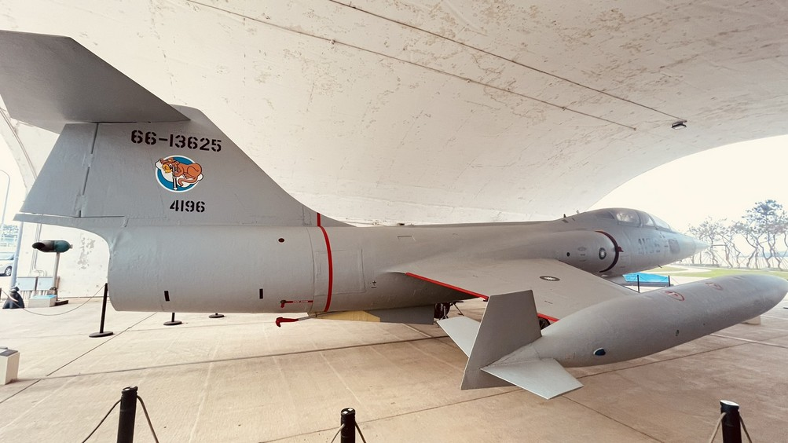

黑貓中隊正式番號為中華民國空軍第 35 中隊，於 1961 年成軍，駐紮桃園空軍基地，由中央情報局（CIA）與中華民國空軍合作組訓，執行對中國大陸戰略偵察任務，主力機型為洛克希德 U-2 高空偵察機。中隊運作期間累積飛行架次與情報蒐集成果，亦付出多名飛行員犧牲之代價。1974 年因國際局勢轉變（中美關係正常化、衛星偵察興起）而解散。
年代軸線 · 1955 → 2026
三個時間錨點：成軍（1961）、解散（1974）、本案啟動（2026）。標示見證者高齡化最後窗口。
1955
籌備期
[L1]美中情報合作框架成形，初期人員選拔與訓練開始醞釀。
1961 ★
成軍 — 中華民國空軍第 35 中隊
[L1]於桃園空軍基地正式成軍。冷戰高峰、台海情勢交織。部隊代號「黑貓 Black Cat」，與美國中央情報局（CIA）合作組訓。
1962
首航 — U-2 高空偵察起飛
[L1]主力機型洛克希德 U-2 由美方提供。執行對中國大陸高空戰略偵察。座艙壓力比月球表面還低。
1960s
高峰 — 任務密度最高
[L1]U-2 高空偵察任務密度最高的時期。「飛 7 萬呎以上，恐懼變成程序。」與《一把青》劇情中段的「等待與失去高峰」於敘事上交集。
1970s
縮減 — 衛星偵察興起
[L1]隨國際局勢變化與衛星偵察技術成熟，U-2 任務逐步縮減。
1974 ★
解散
[L1]因中美關係正常化進程與衛星偵察興起，黑貓中隊正式解散。第 35 中隊番號封存。
2010s
解密與紀念
[L1]國防部解密文件公開週期 50 年，CIA 解密 U-2 對華偵察任務公開部分。國家檔案管理局公開檔案。
2026 ★
本案啟動 — 等待的天空
[L3]桃園航空城建設階段性節點 + 黑貓見證者多 80+ 口述史最後窗口 + 生成式 AI 與 XR 抵達消費級拐點 + ESG 政策窗口。四時間軸交集於 2026。
史實要點 · 10 條
01成軍年份：1961（冷戰高峰、台海情勢交織）[L1]
02正式番號：中華民國空軍第 35 中隊；部隊代號「黑貓」[L1]
03駐紮地點：桃園空軍基地（現桃園機場周邊）[L1]
04主力機型：洛克希德 U-2 高空偵察機（美方提供）[L1]
05任務性質：對中國大陸高空戰略偵察[L1]
06夥伴關係：與美國中央情報局（CIA）合作組訓[L1]
07解散年份：1974[L1]
08犧牲飛行員：殉職與被擊落者多名（具體名單依國防部公開資料）[L1][L4]
09現存文物：U-2 機體、飛行裝備、任務紀錄（分散保存）[L1]
10見證者：現存退役者平均年齡 80 歲以上[L3]

洛克希德 U-2 · 公開規格 [L1]
| 機型代號 | Lockheed U-2 "Dragon Lady" |
| 飛行高度 | 70,000 呎以上（21,300 公尺） |
| 機種定位 | 高空戰略偵察機 |
| 作戰方式 | 單座 · 單發動機 · 噴射推進 |
| 提供方 | 美國洛克希德公司 / CIA 提供中華民國空軍 |
| 作戰半徑 | 長航程偵察 · 對中國大陸戰略目標 |
| 主要任務 | 高空戰略偵察 · 影像情報蒐集 |
| 飛行員待遇 | 座艙壓力極低 · 太空衣壓力服 · 7+ 小時單獨任務 |
★ 致敬殉職飛官
飛 7 萬呎以上，
座艙壓力比月球表面還低。
你問我怕？
恐懼變成程序。
具體殉職名單依國防部公開資料 / Phase 1 完成 L4-1 補齊與審稿
桃園基地・地理唯一性
黑貓中隊原桃園基地地理唯一性是本案的S3 優勢（SWOT 分析）— 黑貓 + 一把青 + 航空城三 IP 在 1960s 桃園基地時空交集，這是桃園不能被複製的城市資產。
邊界宣示：本案僅以《一把青》為「同時代精神參照」，不將虛構角色與真實隊員對應，亦不虛構未出現之劇情與台詞。AI 互動採 RAG 錨定真實 corpus，禁止自由生成歷史人物言論。